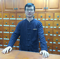

-
陈根成 出诊时间：周一、二、三下午、四、六、日
医学博士、教授、主任中医师、博士研究生导师；广州市孚道仁医健康管理有限公司创始人、孚道仁医中医馆馆长；中华中医药学会脑病分会常委，广东省中医药学会脑病专业委员会常委，广东省中医药学会老年病专业委员会副主任委员，广东省中西医结合学会神经科专业委员会委员。陈教授醉心医术、潜心问道、执着追求大医大德，从医以来以传统医学为基础，在中医药治疗内科病证方面有丰富的临床经验，尤擅神经内科疾病、中风、失眠的诊治，效果显著。主持多项省部级科研课题，发表学术论文30余篇。著有《命门精解与临床应用》一书。命门学说是中医学的突出代表，也是中华文化的重要组成部分。本书引经据典，用通俗的语言，从传统中医角度考证了命门的位置，阐释了命门与中医“神”的关系，并用大量的临床实例展示了系统命门学说在实践中的应用，其效颇佳，对医学从业者尤其是神经内科医生具有较好的启发意义和借鉴作用

-
马德孚 出诊时间：周一、四、五
主任医师、教授、新疆名老中医。原新疆医科大学中医学院《伤寒论》、《金匮要略》教研室主任，中国中医药学会张仲景学术研究委员会委员，乌鲁木齐中医药学会副会长，全国高等院校《金匮要略》新世纪全国教材编委。早年师承当代伤寒学泰斗李培生和伤寒学大家杨百茀，从事中医教学和临床50余年，在《伤寒论》、《金匮要略》理论研究、教学和临床实践方面有很深的造诣。擅长中医治疗内、儿、妇科常见病症及疑难杂症，尤擅妇科疑难杂症，如子宫肌瘤、卵巢、附件囊肿、乳腺囊肿及纤维瘤、月经期感冒，月经不调、习惯性流产、不孕等。对于内科疾病如胆囊炎、慢性胃炎、肝炎、泌尿系结石、前列腺炎等，效果俱佳
-
黄水清 出诊时间：周一下午
教授、医学博士、博士生导师，师从国家级名老中医刘茂才教授，中华中医药学会继续教育分会委员，中医临床30余年，擅长于诊治免疫性疾病、疲劳综合症、脑血管病、高血压、冠心病、糖尿病及内科杂病等
-
施旭光 出诊时间：预约
教授、主任中医师、博士生导师，中华中医药学会方剂专业委员会委员，广东省保健行业协会资深专家。擅长用中医方法治疗内科常见病和疑难杂症，特别在肠胃病、腰腿疼、咳嗽等诊治方面有独到之处。在中医养生保健、药膳食疗等方面有深入的研究
-
黄平东 出诊时间：周六
医学博士、主任中医师、硕士生导师，从事中医临床及教学20余年。擅长于诊治内科常见疾病及疑难杂症，如感冒、发热、咳嗽、头痛、失眠等，尤擅诊治老年病、高血压、冠心病、糖尿病、脑梗塞、心肌炎等

-
陈志雄 出诊时间：预约
教授、主任中医师、博士生导师、广东省名中医、广州中医药大学二级教授、国务院特殊津贴专家。陈教授中医理论和临床造诣精深，在中西医结合治疗血液病，急、慢性白血病分期治疗，内外合治再生障碍性贫血，祛风凉血补肾法治疗免疫性血小板减少性紫瘕，中医药调整化疗毒副作用等方面有深入研究
-
徐大基 出诊时间：预约
教授、医学博士、主任中医师、硕士生导师，师从广东省名中医黄春林教授及国医大师张琪教授，现任香港浸会大学中医学院主任中医师。中医临床近30年，擅长诊治各种内科疾病，尤擅治疗慢性肾脏病、糖尿病、痛风、高血压等疾病
-
张正 出诊时间：预约
主任中医师、硕士生导师，长期从事中医基础理论和针灸学教学及临床工作，擅长综合运用针灸、推拿及理疗治疗神经系统疾病、疼痛性疾病、运动损伤等；尤擅针药结合治疗各种内科病症、过敏性疾病和体质调理
-
庄洪 出诊时间：周三下午
教授、医学博士、主任中医师、博士生导师，广州中医药大学国家级重点学科中医骨伤科学学科带头人之一，中医骨伤临床30余年，擅长诊治各种骨伤科疾病，尤擅治疗骨质疏松症、颈肩腰腿痛等疾病

-
戴媺 出诊时间：周六上午
主任中医师，从事血液病临床和科研工作近20年，对血液病的中西结合诊断和治疗有独特见解。主要研究方向：多发性骨髓瘤、骨髓增生异常综合征、原发性血小板减少症、再障等。擅长中西医结合治疗中医血症证、血虚及各种原因贫血、血细胞减少、以及中老年急慢性白血病、淋巴瘤等血液肿瘤疾病
-
余茂林 出诊时间：预约
临床医学博士、国家二级心里咨询师、峨眉临济宗十四代弟子，擅长运用董氏奇穴、平衡针、推拿、整脊、肌筋膜牵拉以及中药等治疗颈椎病、腰椎间盘突出症、肩周炎、膝关节退行性病变等颈肩腰腿痛疾病，尤擅运用意象、心理分析结合中药、推拿等治疗焦虑症、抑郁症、强迫症等心理疾病
-
王倩 出诊时间：预约
教授、主任中医师、硕士生导师，从事中医针灸临床30余年，主治多种临床常见病，颈肩腰腿痛、妇科病如不孕不育、慢性盆腔炎及面谈、慢性肠胃病、鼻炎、小儿疳积、痔疮等常见病

-
冀慧鹏 出诊时间：周一上午、二、三下午、五、六、日
主任中医师，原河南禹州市中医院院长，许昌市优秀学术技术带头人，禹州市首届杰出人才。中医内科临床30余年，曾在国家肝病中心进修学习，擅长诊治各类内科疾病，尤擅治疗消化系统疾病，如胃炎、肠炎、肝炎、胰腺炎、肝硬化、胆石症等
-
曲崇正 出诊时间：预约
主任中医师，医学硕士，中国针灸协会会员。毕业于广州中医药大学针灸推拿专业，从事中医临床和教学工作20余年，擅长运用传统的推拿针灸治疗颈肩腰腿痛、四肢筋伤、神经系统疾病
-
叶江林 出诊时间：预约
副主任中医师，从事中医临床近20年，曾在北京人民大学医院进修神经内科，擅长神经内科疾病的诊治，如中风、失眠、眩晕、痴呆、头痛、癫痫、麻木、脊髓炎及周围神经病等
-
陈克 出诊时间：预约
主治中医师，从事中医临床及教学工作20余年，临床经验丰富，擅长诊治内科、妇科等常见病，尤擅治疗乳房疼痛、乳房肿块等乳腺增生性疾病；月经失调、痛经、更年期综合征等疾病
- 
-
张昆 出诊时间：周四下午、日下午
主治中医师，从事中医针灸临床工作近10年，跟师全国名老中医孙六合、王宏坤教授，师从岭南针灸名家靳瑞学术继承人陈兴华教授，擅长针药结合治疗内科疾病，尤擅治疗颈肩腰腿疼、头疼、失眠、肿瘤放化疗后调理、类风湿关节痛、湿疹、皮炎等疾病
-
李玢 出诊时间：周一、二
医学博士、出身医学世家、师承中医名家。方药、针灸并重，擅长妇儿杂症，如孕前体质调理、亚健康体质调理、月经不调、痛经、闭经、崩漏、白带异常、经前期综合症、更年期综合症、小儿感冒等儿科常见病，小儿易患病体质调理、消化不良、慢性胃炎、胆囊炎、腹泻等